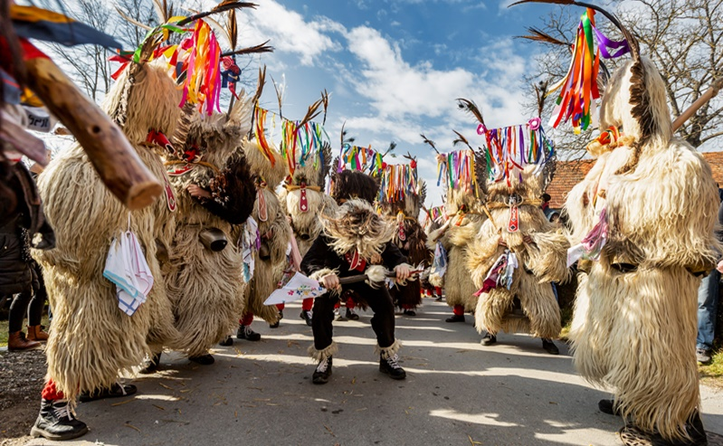

FEBRUARY MIGHT BE short on days, but it’s long on exciting events to catch around the world. From sledding down a Polynesian volcano to celebrating carnival in the Canary Islands, here’s what to experience and where to do it this month.
February 1–15 | Easter Island, Chile—Known for its mysterious moai statues, Easter Island, also known as Rapa Nui, celebrates its Polynesian heritage at Tapati Rapa Nui, a dynamic, action-packed festival. Events range from canoe races and spear throwing to loincloth-clad racers hurtling down the Maunga Pu’i volcano feet first on toboggans crafted from banana tree logs. They can reach up to 50 miles an hour. Interested in Easter Island’s natural wonders? Click here.
February 7–March 1 | Perth, Australia—During the three-week-long Perth Festival, culture fans flood Western Australia’s remote capital city for art exhibits, music, and theater performances. This year’s festival spotlights the art and language of the Aboriginal Noongar people. It’s summertime in Oz, so take advantage of the world-class beaches and endless sunshine too. Did you know that Perth was one of our best trips in 2019? Check out the best places to visit in 2020.
February 14–25 | Ptuj, Slovenia—Chase away the winter blues in Ptuj (pronounced P-too-ee)—Slovenia’s oldest documented city—during the Kurentovanje carnival. The city’s cobblestone streets fill with parades of locals dressed in sheepskin, devilish masks, and fur caps representing Kurenti, a mythical figure who ushers in the spring. Also worth exploring: the surrounding rolling countryside, hilltop castle, and colorful street art. Embrace springtime weather with these three amazing outdoor adventures in Slovenia.
February 21–March 1 | Tenerife, Canary Islands—The Canary Islands—located on the northwestern coast of Africa—hosts one of the world’s largest carnival extravaganzas. Dance alongside people decked out in flamboyant costumes and marvel at brightly decorated floats, then stick around for the festival’s final event, the El Entierro de la Sardina or the Burial of the Sardine. It features revelers pulling a 30-foot-long papier-mâché fish through the streets to mourn the end of the festivities. Interested in the history of carnival traditions? Read more here.
February | Yellowstone National Park, Wyoming—Yellowstone National Park’s dramatic, winter landscape provides a stunning backdrop to see wolves on the prowl. Scientists reintroduced gray wolves into the world’s first national park in 1995 after they were nearly driven to extinction. Look for packs living in the Lamar Valley, Hayden Valley, and Blacktail Deer Plateau. Wondering where else you can see wolves in America? Here’s where to find them.
Leave a comment